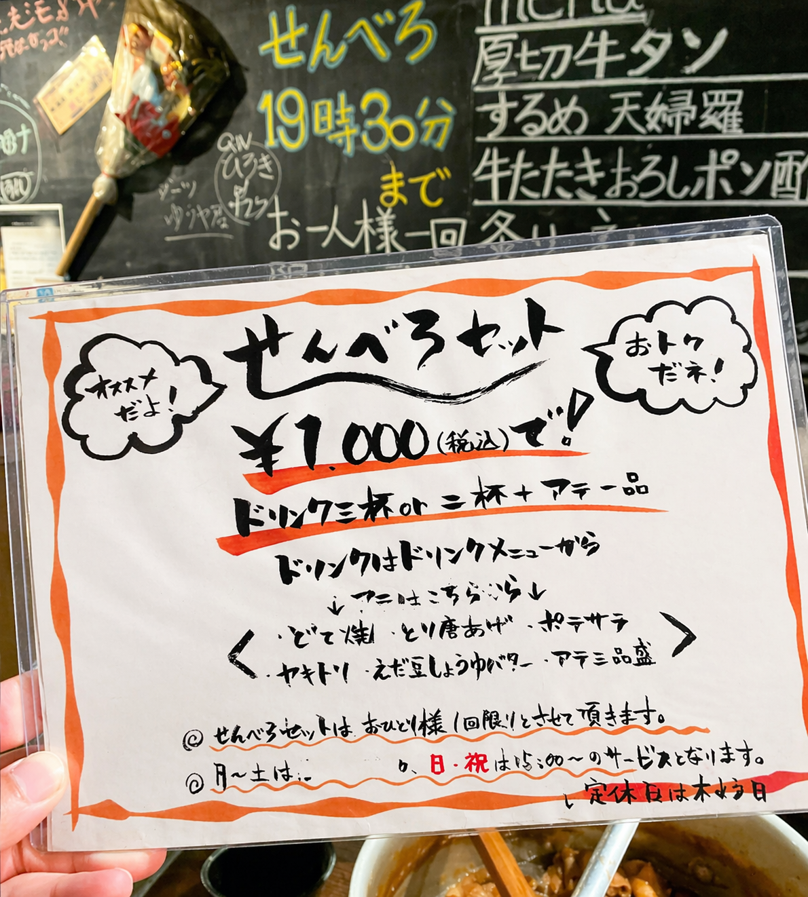
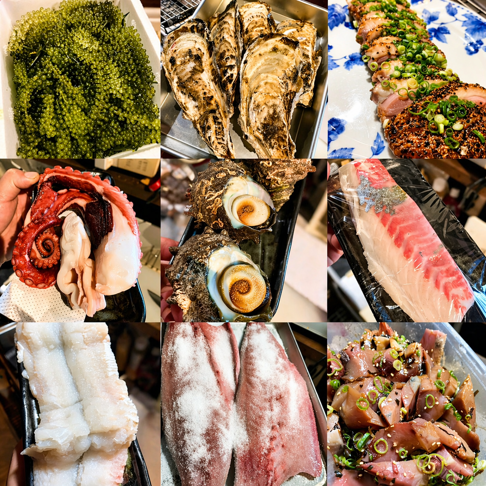
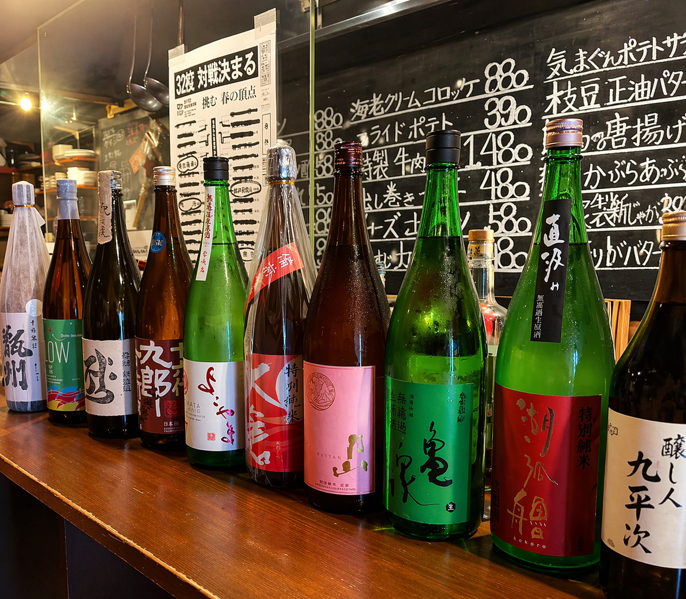
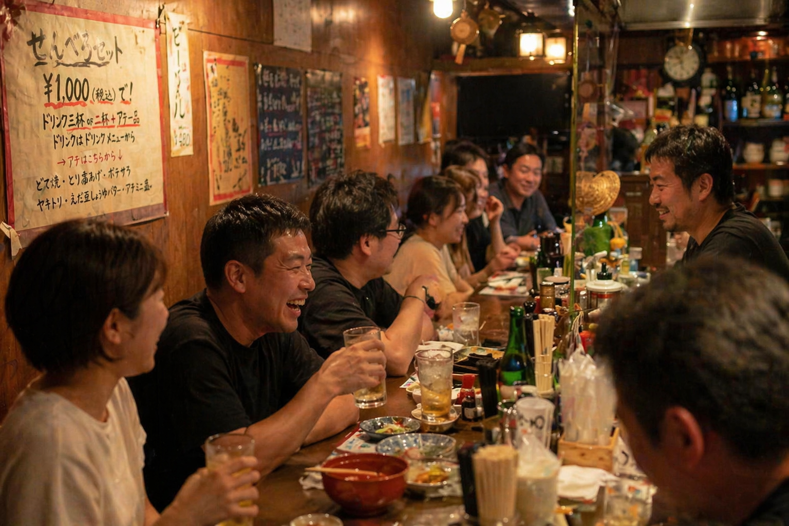
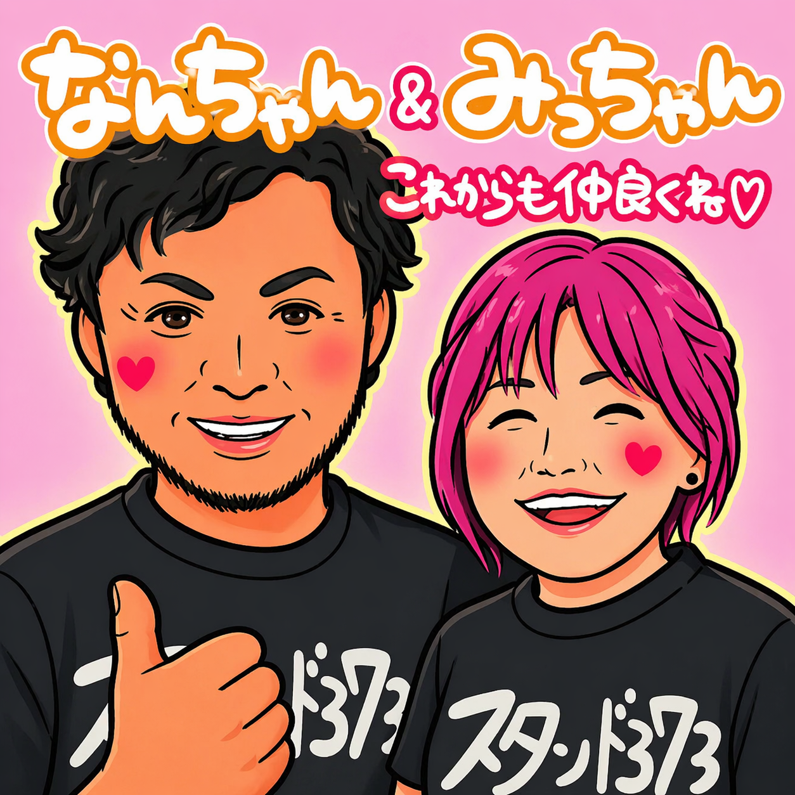

01
駅近で、ふらっと寄りやすい
南海高野線 白鷺駅から徒歩約4分。
仕事帰りにも、飲み会前後にも立ち寄りやすい立地です。
CONCEPT
白鷺で“ちょうどいい一軒”を探しているなら、スタンド373へ。
立ち飲みならではの気軽さはそのままに、しっかり美味しい料理とお酒を楽しめる、
日常使いしやすい酒場です。
FEATURE
南海高野線 白鷺駅から徒歩約4分。
仕事帰りにも、飲み会前後にも立ち寄りやすい立地です。
酒好き歓迎のスタンド酒場。
気取らず入れて、ちゃんと満足できる一品料理とお酒が揃います。
2階フロアは貸切利用も可能。
少人数の集まりやちょっとした宴会にも使いやすい一軒です。

ATMOSPHERE
初めてでも入りやすく、常連になればなるほど居心地が良くなる。 そんな“街のスタンド”らしい空気感を大切にしたいお店です。
FOOD & DRINK
一品料理をつまみながら、気分に合わせてもう一杯。
“軽く飲むつもりが、つい長居してしまう” そんな夜にもぴったりです。

SCENE
気負わず立ち寄れて、短時間でも満足しやすい。
軽く飲みたい夜にも、もう少し話したい夜にも。
2F貸切で、ちょうどいい距離感の飲み会にも。
SPECIAL

スタンド373の魅力をまず気軽に味わえる、うれしいせんべろセット。
初めての方にも入りやすく、仕事帰りの一杯や軽く飲みたい日にもぴったりです。
“ちょっと寄ってみようかな” が、そのまま楽しい時間になる。
そんな入口として使いやすい一品です。
FOOD
お酒に合う一品はもちろん、旬の魚介やその日のおすすめまで。
気軽な酒場なのに、料理がちゃんと強いのがスタンド373の魅力です。

DRINK

カウンターに並ぶお酒を眺めながら、その日の気分で一杯。
気軽に飲めるのに、ちゃんと選ぶ楽しさもあるのがこのお店らしさです。
一人でしっぽり飲みたい夜にも、仲間とにぎやかに楽しみたい時にも合います。

ATMOSPHERE
カウンター越しの会話や、お店全体の空気感もこの店の魅力。
はじめてでも入りやすく、何度も通いたくなる居心地の良さがあります。
ABOUT

お店の雰囲気をつくっているのは、料理やお酒だけではありません。
人のあたたかさや、居心地のよさがあってこそ、
「また来よう」と思える場所になります。
スタンド373は、そんな“人で選ばれる酒場”としての魅力も感じられる一軒です。
INFORMATION